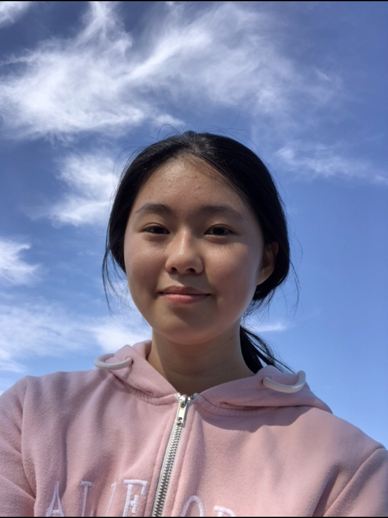

Visit and Learn More
Personal WebsiteEach 1 Teach 1
Shadow Website - Fuerza
Resume
Photos
LingLing is a sophomore at Lincoln High School and she's interested in medical fields and STEM. LingLing was nominated in 2017 to be part of Community Music Center 's Young Musician Program. At Lincoln, she's in the anime, robotics, CEO, and keyboard clubs. She's currently an internship junior coordinator at Heart In Motion, intern at Mayor's Youth Employment & Education Program, and an intern at Each 1 Teach 1. She hopes to one day make her own game.
